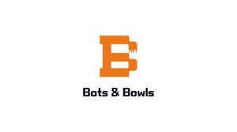

Trade Mark Journal No.2025/046 14 November 2025
UK00004290057 5 November 2025 (7,35,43)

- Class 7
- Dispensing machines [other than vending machines]; Vending machines; Food preparation machines, electromechanical; Electromechanical food preparation machines; Electromechanical machines for food preparation; Food and beverage processing and preparation machines and apparatus; Machines used in processing food; Automated vending machines; Electromechanical machines for food or beverage preparation; Food preparation machines (Electric -); Machines for food preparation [electric]; Electric food preparation machines; Packaging apparatus [machines]; Beverage preparation machines, electromechanical; Electromechanical beverage preparation machines; Electromechanical machines for beverage preparation; Machines for washing laboratory apparatus; Automatic vending machines; Automatic dispensing [vending] machines; Food processing machines (Electric -); Machines for preparing food [industrial]; Automatic packing machines for food; Refrigerated vending machines; Machines for processing foodstuffs; Packaging machines for food; Industrial robot washing machines; Beverage processing machines; Dispensing machines; Robotic packaging machines; Machines for the preparation of foodstuffs [industrial]; Machines for preparing beverages [industrial]; Robotic labelling machines; Machines for processing foods; Robotic cleaning machines; Cleaning (Machines and apparatus for -), electric; Machines and apparatus for cleaning, electric; Industrial food mixers [machines]; Machines for washing food [electric]; Machines for slicing food [industrial]; Processing machines for use in the food industry; Dishwashing machines; Ticket vending machines; Peeling machines (Electric -) for use in the preparation of food; Meat mincing machines [electric machines]; Palletising machines; Robotic filling machines; Polishing (Machines and apparatus for -) [electric]; Machines and apparatus for polishing [electric]; Meat processing machines; Machines for processing vegetables; Machines for mixing foodstuffs; Hay grippers [machines or parts of machines]; Industrial robot sewing machines; Food slicing machines (Electric -); Meat mincing machines [electric machines] for household use; Spinning preparation machines; Sieves [machines or parts of machines]; Grinding tools [machines or parts of machines]; Pumping apparatus [machines]; Robotic welding machines; Machines for use in the processing of water; Pumps for use in the food industry [machines]; Polishing (machines and apparatus for -) for household purposes [electric]; Industrial washing machines; Robotic painting machines; Packing machines; Mowing buckets [machines or parts of machines]; Machines for manufacturing containers; Automatic dispensing machines; Joysticks being parts of machines, other than for game machines; Conveyors [machines]; Conveyors being machines; Feeding machines; Machine guides [parts of machines]; Vending machines (Counter operated -); Contacting machines [mixing machines]; Cartoning machines; Harvesting machines; Transporting machines.
- Class 35
- Business advertising services relating to franchising; Business management of insurance agencies and brokers on an outsourcing basis; Consulting services in the field of development of advertising concepts; Modeling services for advertising or sales promotion; Brand creation services (advertising and promotion); Business intermediary and advisory services in the field of selling products and rendering services; Advertising, including promotion of products and services of third parties through sponsoring arrangements and licence agreements relating to international sports' events; Customer club services, for commercial, promotional and/or advertising purposes; Advisory services relating to the corporate structure of companies; Business management advisory services relating to franchising; Business consultancy services relating to the marketing of fund raising campaigns; Assistance to commercial enterprises in the management of their business; Promoting the goods and services of others through the administration of sales and promotional incentive schemes involving trading stamps; Franchising (Business advisory services relating to -); Business advisory services relating to franchising; Modelling and models for advertising or sales promotion; Advisory services (Business -) relating to the establishment of franchises; Business strategy development services; Organisation of customer loyalty programs for commercial, promotional or advertising purposes; Advertising services relating to the commercialization of new products; Provision of models for advertising; Provision of marketing advisory services for manufacturers; Commercial administration of the licensing of the goods and services of others; Assistance to management in commercial enterprises in respect of advertising; Business management advisory services relating to commercial enterprises; Business advisory services relating to franchising of a motor dealership; Marketing in the framework of software publishing; Advisory services (Business -) relating to the operation of franchises; Modelling agency services for sales promotion purposes; Business consultancy services relating to the promotion of fund raising campaigns; Business advisory services relating to product manufacturing; Advertising services for the promotion of e-commerce; Customer loyalty services for commercial, promotional and/or advertising purposes; Management on behalf of industrial and commercial enterprises in terms of supplying them with office requisites; Planning concerning business management, namely, searching for partners for amalgamations and business take-overs as well as for business establishments; Provision of space on websites for advertising goods and services; Business advisory services relating to the establishment and operation of franchises; Business consultancy services relating to product development; Advertising services to create corporate and brand identity; Advertising, including on-line advertising on a computer network; Business management assistance for industrial or commercial companies; Assistance in franchised commercial business management; Business strategy services; Advertising services relating to the motor vehicle industry; Distribution of products for advertising purposes; Brand strategy services; Business consultancy services relating to the supply of quality management systems; Provision of advertising space on a global computer network; Providing assistance in the field of product commercialization within the framework of a franchise contract; Presentation of companies and their goods and services on the Internet; Consultancy relating to business advertising; Business advisory services relating to product development; Assistance in product commercialization, within the framework of a franchise contract; Advertising services for the literary industry; Rental of advertising space on the Internet for employment advertising; Business management for a trade company and for a service company; Services rendered by a franchisor, namely, assistance in the running or management of industrial or commercial enterprises; Development of advertising concepts; Leasing of advertising space on railway properties; Business consultancy services relating to management of fund raising campaigns; Management assistance to commercial companies; Organization of trade fairs for commercial or advertising purposes; Trade fairs (Organization of -) for commercial or advertising purposes; Consultancy and advisory services in the field of business strategy; Marketing through product placement for others in virtual environments; Advertising services relating to the provision of business; Providing assistance in the field of business management within the framework of a franchise contract; Help in the management of business affairs or commercial functions of an industrial or commercial enterprise; Business management assistance in the field of franchising; Promotion [advertising] of business; Consultancy services regarding business strategies; Organisation of trade fairs for commercial or advertising purposes; Consultancy services relating to advertising, publicity and marketing; Business marketing services; Modelling agency services relating to advertising; Advertising services for promoting the brokerage of stocks and other securities; Business services relating to the arrangement of joint ventures; Development of business organization strategies relating to corporate social responsibility; Provision of space on web-sites for advertising goods and services; Online advertising network matching services for connecting advertisers to websites; Advertising, marketing and promotion services; Marketing, advertising and promotion services; Franchising services providing marketing assistance; Business merchandising display services; Advertising and promotion services and related consulting; Assistance in business management within the framework of a franchise contract; Retail services in relation to information technology equipment; Providing business management and operational assistance to commercial businesses; Business marketing consulting services; Modelling agency services relating to sales promotions; Trade fair (Organization of -) for commercial or advertising purposes; Consultancy relating to advertising and promotion services; Acquisitions (Business -) consulting services; Providing a searchable online advertising guide featuring the goods and services of other on-line vendors on the internet; Advertising, marketing and promotional consultancy, advisory and assistance services; Business promotion services; Business advisory services relating to company performance; Advisory services (Business -) relating to the exploitation of inventions; Marketing services provided by means of digital networks; Organization of exhibitions and trade fairs for commercial or advertising purposes; Evaluations relating to business management in commercial enterprises; Provision of advertising space on electronic media.
- Class 43
- Services for providing food; Take-away food services; Takeaway food services; Food preparation services; Catering services for the provision of food; Services for providing food and drink; Catering services for the provision of food and drink; Services for the provision of food and drink; Contract food services; Hospitality services [food and drink]; Restaurant services for the provision of fast food; Services for the preparation of food and drink; Food and drink preparation services; Take-away food and drink services; Takeaway food and drink services; Take-away fast food services; Consultancy services relating to food; Providing food and drink catering services for exhibition facilities; Food reviewing services [provision of information about food and drinks]; Providing food and drink catering services for convention facilities; Consultancy services in the field of food and drink catering; Club services for the provision of food and drink; Charitable services, namely providing food and drink catering; Providing food and drink catering services for fair and exhibition facilities; Restaurant services; Catering for the provision of food and beverages; Consultancy services relating to food preparation; Information, advice and reservation services for the provision of food and drink; Rental of food service equipment; Providing restaurant services; Provision of food and beverages; Night club services [provision of food]; Catering for the provision of food and drink; Providing food and beverages; Catering services; Restaurant information services; Providing drink services; Services for providing drink; Cafeteria services; Catering of food and drinks; Food and drink catering for institutions; Providing food to needy persons [charitable services]; Take-out restaurant services; Take away food services; Provision of food and drink in restaurants; Fast-food restaurant services; Takeaway services; Coffee supply services for offices [provision of beverages]; Rental of food service apparatus; Food service apparatus (Rental of -); Catering services for providing Spanish cuisine; Canteen services; Ramen restaurant services; Catering services for providing Japanese cuisine; Catering services for hospitals; Washoku restaurant services; Take-away restaurant services; Sushi restaurant services; Food and drink catering; Catering of food and drink; Catering (Food and drink -); Mobile restaurant services; Self-service restaurant services; Take away food and drink services; Bistro services; Mobile catering services; Cafe services; Corporate hospitality (provision of food and drink); Providing food and drink; Providing of food and drink; Charitable services, namely, providing food to needy persons; Provision of food and drink; Providing food and drink for guests in restaurants; Accommodation services; Hospitality services [accommodation]; Wine tasting services (provision of beverages); Catering services for providing European-style cuisine.
Kensington Knowledge Crafts Limited